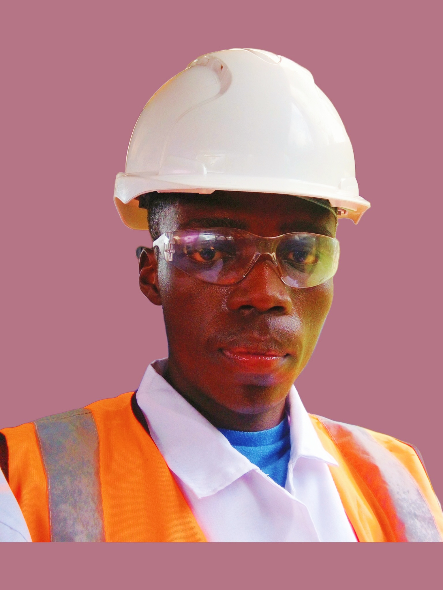
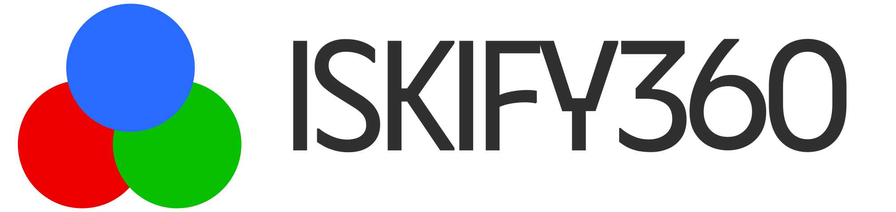

About Engineer Brian

CORE VALUES
- Integrity in every action
- Innovation in problem-solving
- Commitment to lifelong learning
- Leadership through collaboration
FEATURED PROJECTS

Iskify360 is a universally accessible digital platform, powering innovative solutions like the I360 Android application and i360 Online communication platform. These tools are designed to enhance productivity, engagement, and connectivity for users worldwide.
The I360 Android app offers not only essential student tools, such as performance analysis, assignment tracking, and real-time notifications, but also advanced media and video functionality. This makes it a versatile platform suitable for learners, professionals, and anyone looking for a powerful multimedia experience. Whether for academic purposes or entertainment, I360, powered by Iskify360, has you covered.
💬
I360 Oline Platform
A real-time chat platform with rich messaging capabilities, online/offline tracking, and file sharing for seamless communication.
Try It Out🔬
Ceramics Presentation
Exploring the significance, recycling, and economic impact of ceramics in material science.
Read MoreSkills
Programming Languages
Proficient in C, C++, and Java programming languages, building robust solutions with an emphasis on performance and scalability.
Android & Web Development
Expertise in developing responsive, high-performance Android and web applications to solve real-world problems.
Microsoft Office Suite
Proficient in utilizing Microsoft Office Suite for documentation, presentations, and data management, ensuring efficient workflows.
Electronics Analysis & Repair
Skilled in analyzing and repairing electronics, from basic troubleshooting to advanced diagnostics and component-level repairs.
Leadership & Organizational Skills
Strong leadership and organizational abilities developed through roles such as Secretary General, fostering teamwork and managing projects effectively.
Certifications and Awards
-
Certified Android Developer
-
Mining Engineer License (Pending)
-
Certified Computer Technician & Administrator
-
Most Disciplined and Performing Student Award in High School
-
Best Performing Executive Award [Secretary Disciplinary Committee]
-
Secretary General MESK and Class Representative in JKUAT
Resume / CV
You can view and download my resume below. For a more detailed look at my qualifications and professional experience, feel free to explore.
Contact
Let's work together or get in touch for more details. Feel free to reach out on any of my social platforms below: